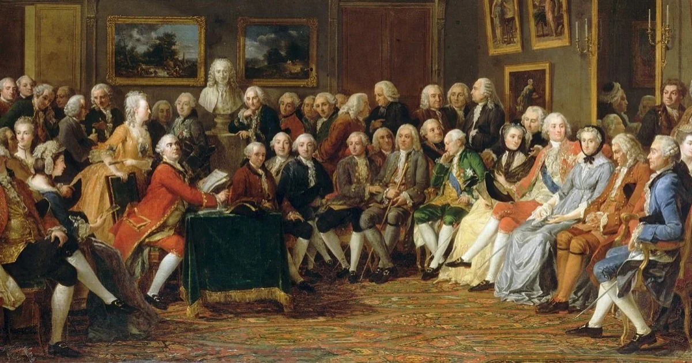
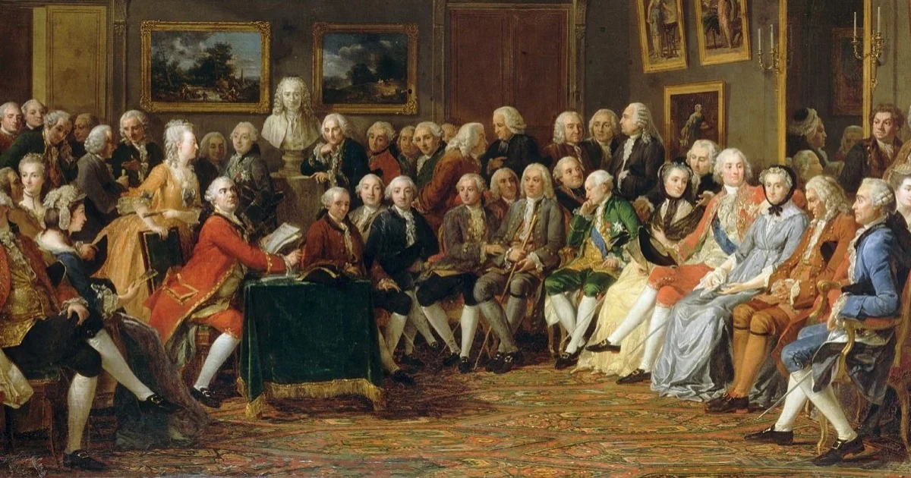

A Revolução Francesa e a independência dos EUA foram momentos históricos enormes. Quando os franceses ajudaram os americanos a se tornarem independentes, isso acabou influenciando a Revolução Francesa de 1789. Ao reconhecerem os EUA como um país livre, os franceses não só apoiaram a liberdade, mas também inspiraram ideias revolucionárias na França. Esses eventos conectados mostram como lutas por independência e liberdade estão ligadas em diferentes partes do mundo, deixando um legado.
O Iluminismo foi um movimento intelectual muito importante para o novo pensamento, surgiu na Europa nos séculos XVII e XVIII. Os iluministas valorizavam a razão, a ciência e a liberdade de pensamento. Eles questionavam tradições antigas e defendiam coisas como direitos individuais, separação entre igreja e Estado e o poder da educação para melhorar a sociedade.
A ideia destes direitos, tornou-se os Recursos Humanos de hoje em dia.
Começou com a Declaração de Independência em 1776, onde as Treze Colônias expressaram a busca por liberdade, autodeterminação e igualdade perante a lei. A Guerra de Independência Americana que se seguiu foi uma batalha difícil liderada por figuras como George Washington, cujo papel como líder militar foi fundamental para a vitória sobre os britânicos.
O Tratado de Paris em 1783 marcou o fim da guerra e a confirmação da independência dos Estados Unidos, dando início a uma nova nação. Esse evento não só estabeleceu um novo sistema de governo baseado na democracia, mas também inspirou movimentos semelhantes em todo o mundo, promovendo valores como liberdade, igualdade e justiça que perduram até hoje.
A Revolução Francesa, entre 1789 e 1799, foi um momento de grande mudança na França, transformando suas estruturas políticas e sociais. Começou com a convocação dos Estados Gerais em 1789 e a queda da Bastilha, levando à criação da República e à promoção de valores como liberdade, igualdade e fraternidade.
A partir da Queda da Bastilha, o processo revolucionário francês estendeu-se por dez anos e só foi finalizado com o Golpe de 18 de Brumário, organizado por Napoleão Bonaparte. Toda a extensão do processo revolucionário francês é organizada em três fases:Além do Reinado do Terror, a Revolução Francesa teve um impacto duradouro nos ideais políticos e sociais. A proclamação da República, a abolição da monarquia e a Declaração dos Direitos do Homem e do Cidadão influenciaram movimentos revolucionários em todo o mundo, moldando o panorama político e social do século XIX e além.